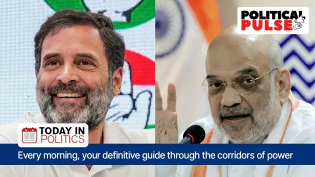

Trending
Today in Politics: Amit Shah, Rahul Gandhi continue on campaign trail; Maratha quota stir intensifies
As elections approach, political campaigning is gathering steam. Union Home Minister Amit Shah will continue with his three-day Madhya Pradesh tour that began on Saturday. Over the next couple of days, Shah is scheduled to visit Chhatarpur, Rewa, Shahdol, Ujjain, Indore, and Gwalior districts to address party meetings and public gatherings. The BJP is battling massive anti-incumbency in the state — Shivraj Singh Chouhan has been at the helm for almost two decades — and has deployed its entire central arsenal in the state.
1 hours ago

Political Pulse
Today in Politics: INDIA Stage 3, how far will the needle move on the alliance?
As reported by Manoj C G & Alok Deshpande, the road to a now 28-party alliance is bumpy, with INDIA pointedly avoiding minefields such as appointing a convenor and steering clear of the suggestion of a prime minister name. However, more-achievable goals such as a sub-group to work out a common communication strategy, a campaign panel, a logo, and a committee to discuss seat-sharing are on the cards.
3 hours ago